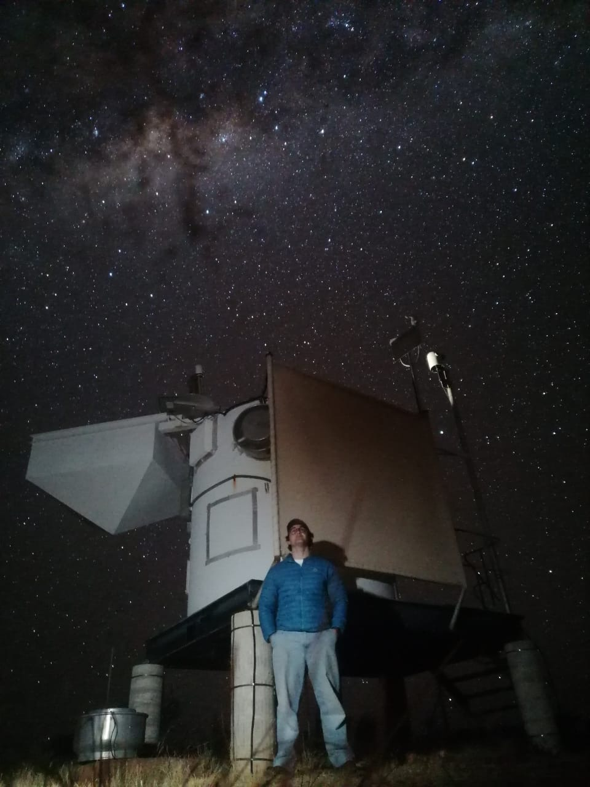
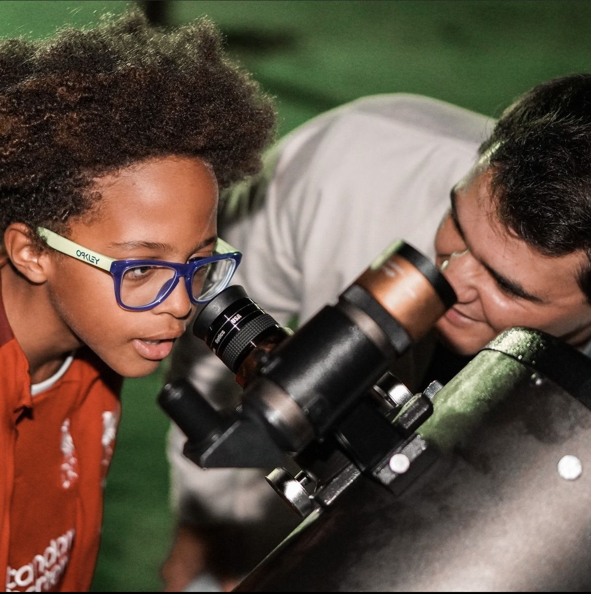

Enzo Peres Afonso
Postgraduate Astrophysics & Space Science Student
I'm a postgraduate student fascinated by stellar transients and the systems we build to study them.
Most of my work is focused on the "how" of astronomy: the code, hardware, and instrumentation that help us turn photons into actual insights.

SIMULATIONS & VISUALIZATIONS
Simulating an Exomoon Transit (Avatar: Pandora)
A computational model exploring how we might detect habitable moons around gas giants in other star systems.
GW170817: Real vs Simulated Data
Visualizing the ripples in spacetime from the merger of two neutron stars, comparing LIGO/Virgo data with theoretical models.
OUTREACH & PERSPECTIVE
I think our night sky is best when it's shared. I spend a lot of my time finding ways to make astronomy more accessible, especially for the blind and visually impaired community, through tactile models and inclusive workshops.
Whether it's a 3D-printable galaxy or a public stargazing night, I just love helping people connect with the cosmos in their own way.
Learn More